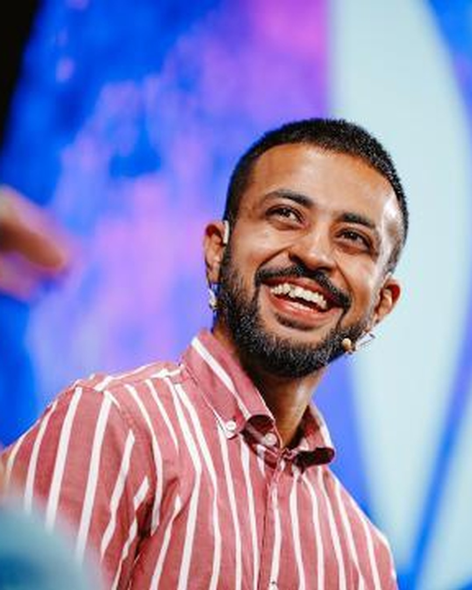

{kind=link}
{kind=link}
{kind=link}
{kind=link}

Caption
Three years ago I sat across from a founder doing $4M with 18 people. He told me his team couldn't make a decision without him.
I asked him to walk me through a normal week.
His team brought him questions they already knew the answer to. He sat in meetings just to "stay in the loop." He responded to Slack within four minutes. The reasoning behind most company decisions lived in his head and was never written down.
None of that looked like a problem from where he was standing. It looked like a founder who was fast, present, and deeply involved.
He couldn't see what he was actually doing. He was training his team to stop thinking.
That conversation has happened a hundred times in my work. Different founder, same shape. There are a handful of these patterns that quietly cost scaling founders $1M+ a year. Most of them are invisible from the inside.
I'm starting a newsletter for founders who want to see them.
It's called The Blind Spot. Every Tuesday. One pattern, broken down clearly, with one thing to do about it before Monday. Five-minute read.
First edition Tuesday.
Link in bio.